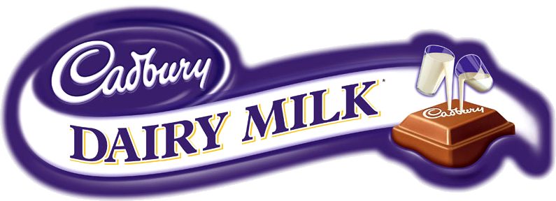

Parrot Chocolatiers
Competitor: Hersheys
Strengths
Hershey's chocolate company has a responsive and relatively easy to use website. The website is fun, but is also informative which is important for maintaining a large market audience of different age groups. Hershey's also has their "Hershey's Promise", stating that their products are made with simple ingredients.
They claim to “use colors from natural sources and are made with no artificial flavors, preservatives or sweeteners. Our commitment to Simple Ingredients starts at the source of those ingredients by using farm fresh milk, roasted California almonds, certified cocoa, and cane sugar”.By doing this they show that they care about their customers. The company is large, employing over 19, 000 people which many would see as important to the economy. The company has also expanded into other markets like candy, making them more recognizable overall.
Weaknesses
Society is becoming more aware of the health effects of chocolate companies, and are more often switching to organic products. Being such a large company may also turn people off, as some are more likely to want to support a small local business rather than such a large corporation. By expanding into other markets it could also be argued that they are less focused on their quality and more on their market share.
"Putting the squawk in Squawklet"
Join our Squawk! At Parrot Chocolatiers, we are committed to producing high quality chocolate, containing the richest flavour. We use 100% fair trade cocoa. We are dedicated to spreading awareness about the working and living conditions in developing countries that harvest cocoa.
Logo Inspiration
For the logo I wanted to stick to the 3 main brand colours, which is why I removed many of the other colours. I also wanted the logo to be slightly less complex. I found all the feathers and different colours almost overwhelming; I like logos that you are able to easily recreate as I find that they are more recognizable. Also for branding purposes it would be easier to have a less complex logo, because a lot of the detail would be lost on packaging anyways.
I included the chef’s hat to promote that the chocolate is made fair trade and in good conditions which is important in order to spread awareness conditions in developing countries that harvest cocoa (a main message of the company). I still wanted to use the entire parrot so that it was recognizable to the brand “Parrot Chocolatiers” and I felt that removing more of the Parrot would have taken away from the branding. I also incorporated the company colours in the logo and on the website in order to promote branding.
Competitor: Cadbury
Strengths
Cadbury's social media presence, specifically on Instagram is strong. They have lots of promotions such as "It's Hunting Season", currently featured on Instagram, which draws excitement to new and already existing products. Cadbury has a very recognizable font and colour (the purple packaging is a staple on many of their products). Their Cadbury foundation also shows that they care about giving back, and shows that they care about their consumers.
Weaknesses
However their company website presence seems outdated. The website is not responsive, the links are all underlined making the site look messy, and the site also looks very choppy, made mostly with boxes.